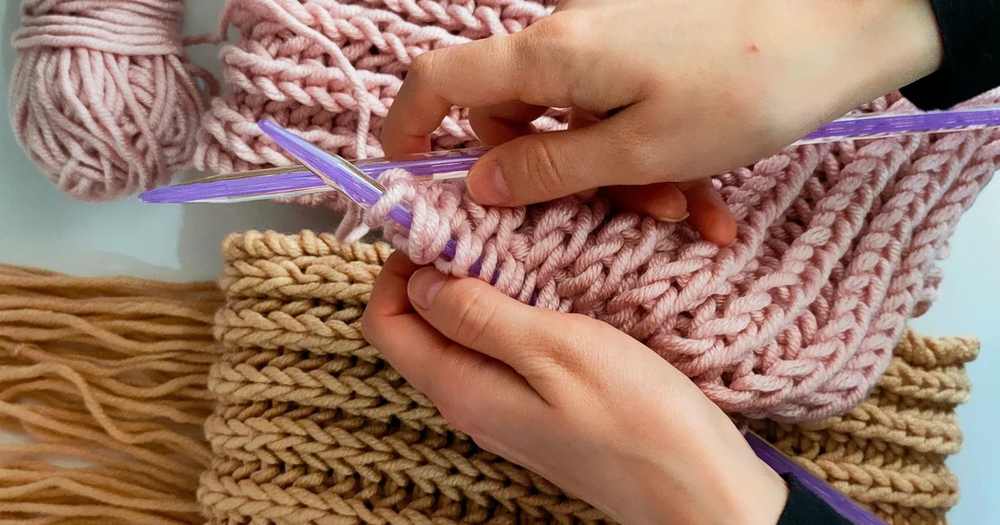
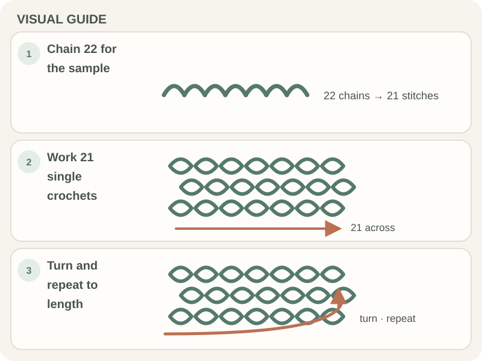

Beginner Projects · Beginner guide
Easy Crochet Scarf Pattern for Beginners
Practice a single-crochet scarf sample with a 21-stitch row, then adjust its length and width to your preference.

This sample gives a beginner a straight row to practice. It is an exercise rather than a sized pattern: no finished dimensions or yarn amount are specified.
Before you begin
Use smooth yarn, a suitable hook, and a yarn needle. The sample uses US single crochet (sc); confirm terminology if following another source.
Step-by-step instructions
- Chain 22. Work one US sc into the second chain from the hook and each remaining chain: 21 stitches in this sample.
- Chain 1 and turn. Work one sc in each of the 21 stitches.
- Repeat, counting often so the width stays consistent. Measure as the fabric grows rather than assuming a row total.
- Stop at your preferred length, fasten off, and weave in tails. Add fringe only if desired and secure it evenly.

What to check
A practice sample, not a size promise
The 21-stitch count follows these instructions; it does not set finished width. Yarn, hook, and tension change dimensions. Check edge stitches and measure the relaxed fabric.
Frequently asked questions
How wide will this scarf be?
No finished measurement is specified. Measure your fabric and change the starting chain for a different width.
Does the turning chain count here?
This sample keeps 21 stitches and does not work into the turning chain. Other patterns may use a different rule.
How do I know when the scarf is long enough?
Measure the relaxed fabric and compare it with your preferred length or the pattern’s target. The sample here does not specify a fixed length.
Read the 21-stitch sample as written
This sample starts with 22 chains and works 21 US single crochets into the chain row. The turning chain is not counted as a stitch in these instructions. For later rows, work one single crochet into each stitch top so the row stays at 21. This is a practice recipe, not a sized scarf pattern: it does not promise a width, length, or amount of yarn. If you are following another scarf pattern, use its stitch count and turning-chain rule instead of transferring these numbers.
Adjust width with a swatch, not a universal size
The sample width depends on yarn thickness, hook, and tension. Make a few rows, lay the fabric flat, and measure before deciding whether to add starting chains. If a separate pattern uses a stitch multiple, change the chain count only in a way that preserves that repeat and edge instructions. A wider scarf uses more yarn and takes longer to reach the same length. Record the starting chain and hook if you want to reproduce the width.
Keep length and finishing in view
Measure the scarf while it is relaxed and stop when it reaches the length you want or the pattern specifies. If adding fringe, plan its length and placement before fastening off, because fringe uses extra yarn. Weave in the tails according to the yarn and pattern; do not trim close until the ends are secure. If the piece is a gift or needs a particular finished size, use a pattern with stated dimensions and gauge rather than treating this exercise as a size chart.
Common mistakes and how to fix them
- Counting the turning chain as a stitch here. These sample instructions keep 21 stitches and do not work into the chain. Follow a different rule only when the pattern says so.
- Adding chains without checking a repeat. A patterned stitch may require a multiple. Keep the repeat intact when adjusting width.
- Estimating length from row count alone. Row height varies with yarn, hook, and tension. Measure the relaxed fabric as it grows.
Tips that make it easier
- Use a short swatch to see whether the stitch and yarn feel comfortable for many rows.
- Keep a tally of rows if your pattern uses a specific length estimate.
- Set the scarf flat without stretching before measuring it.
A useful next step
Check the pattern’s steps, materials, and fit on a small sample before committing to the full project. Use the written counts and care instructions for the yarn you choose.